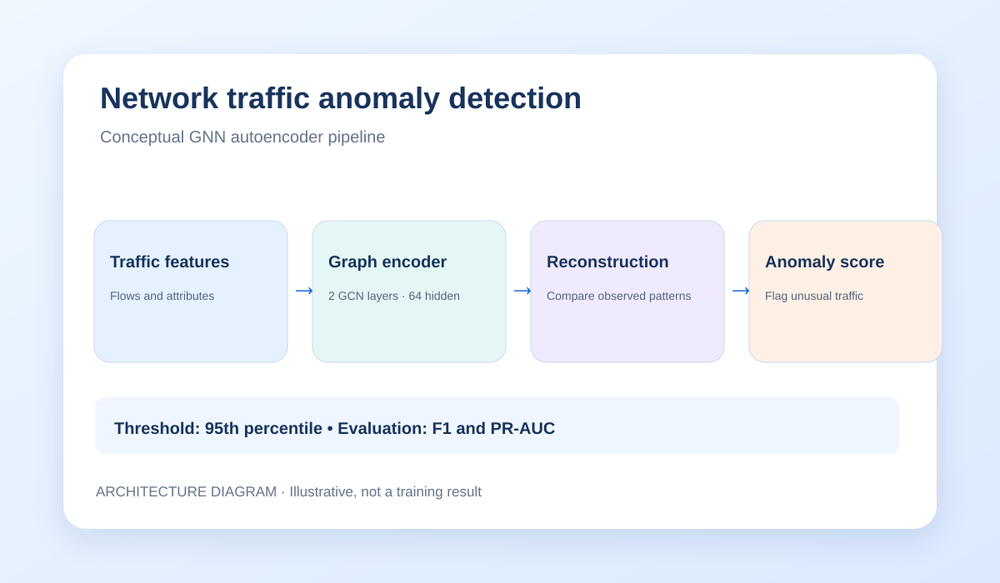

Network Anomaly Detection
Unsupervised network traffic anomaly detection with a graph neural network autoencoder.

The problem
Network environments generate large volumes of traffic, and unusual activity can be difficult to spot from individual records alone. Relationships among traffic records can provide useful context.
The project investigates whether graph representation learning can highlight traffic that does not fit learned patterns.
Dataset & representation
Dataset: NF-UNSW-NB15-v3, used in the academic project.
Approach: model network traffic with graph structure and combine node and edge information for representation learning.
Graph construction choices matter because they determine which relationships the model can learn.
Model architecture
- Prepare network traffic features and graph connectivity.
- Use a two-layer GCNConv encoder with a hidden dimension of 64.
- Combine learned graph representations with edge information.
- Use reconstruction behavior to produce anomaly scores.
- Apply a 95th-percentile threshold to distinguish higher-scoring traffic.
The diagram is a simplified explanation of the planned/modelled workflow rather than a code-level specification.
Evaluation & tradeoffs
Metrics: F1 score and precision–recall area under the curve (PR-AUC) are relevant when anomalous traffic is uncommon.
Threshold tradeoff: a lower threshold can catch more suspicious activity but increase false alarms; a higher threshold can reduce alerts while missing some anomalies.
Graph tradeoff: richer relationships can improve context but make graph preparation and training more complex.
No numeric model results are published here because verified outputs were not supplied.
What I learned & next steps
This work demonstrates how to frame a network security problem as graph-based representation learning and evaluate an anomaly detection pipeline.
To complete the portfolio case study, add verified plots (such as a PR curve), model output screenshots, exact team contributions, and a repository link if public.
See the full project collection
Explore software product ideas and data-focused work.